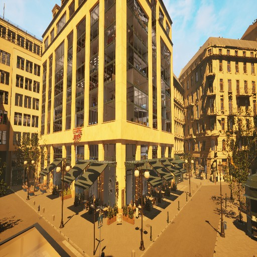
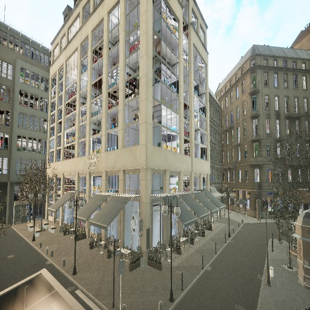
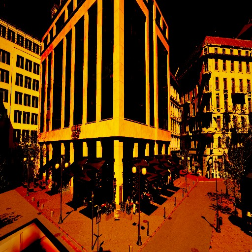
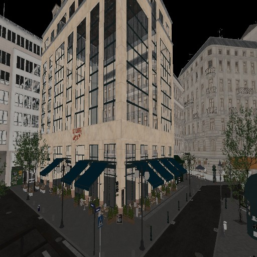
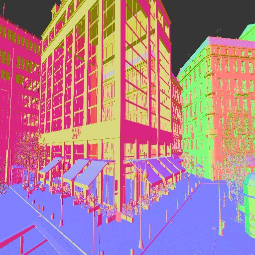
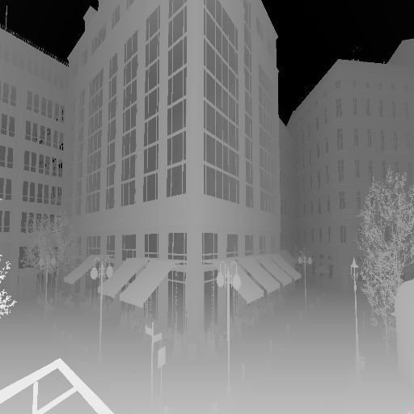
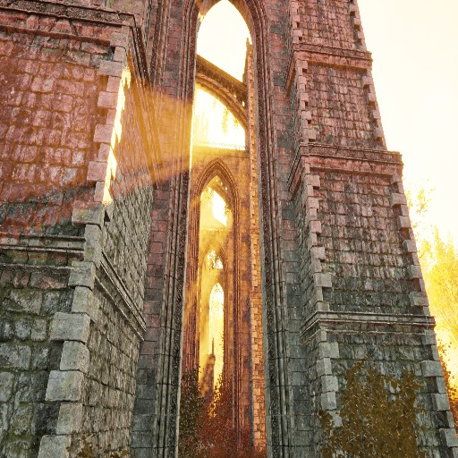
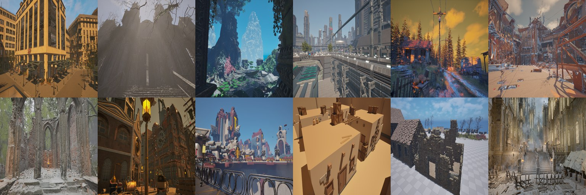

统一数据契约
训练用 RAW 固定为 512² 无头 float32 并附元数据；灯光带稳定 light_id 与 schema 版本，支持保留 / 删除 / 替换 / 新增与单步撤销。
Featured 01 — Neural Lighting / Internship
美术只说一句“黄昏，窗边一点暖光”，或丢一张参考图，系统就在 UE5 里摆出一组可继续编辑的真实灯光。 我负责其中 LightExtractor 的数据生产与全局光网络训练，并为 Relight 沉淀一套打光审美范式。

太阳方向误差（域内），中位 6.02°
太阳存在性 F1（域内）
整张未见场景：太阳存在识别率 / 方向中位误差
DDP + bf16 训练提速；TF32 下主干前向 439 → 240 ms
训练场景 / 对齐样本
自建离线渲染器：99% 像素与解析解的误差不超过峰值的 0.53%
思路来自 RGB↔X 与 DiffusionRenderer：图像先分解成 albedo、normal、光照等层，只改光照层，再合成回去。 搬进引擎后两端都“免费”了：分解就是延迟渲染的 G-buffer，而且是精确值；合成就是引擎渲染器本身。
新问题在中间：引擎的光照是一组离散的灯光 Actor，数量不定、参数繁多，没法逐像素编辑； 意图和参数之间也没有直接映射，结果还必须落回美术能继续调的灯。于是把它拆成两个各自可解的网络。
文本或参考图，加上引擎截取的法线、深度、基色、粗糙度、金属度。
在图像域利用生成先验，输出与几何材质对齐的目标光照图。
从图中的光照证据反推太阳、天空与局部灯的显式参数。
灯光写回场景，由引擎渲染，美术继续微调。
我改造了 UE 采集插件。每个样本包含 RAW HDR 合成图、关掉所有灯的环境光通道、逐灯 OLAT（每次只开一盏灯）、 五通道 G-buffer，以及灯光参数和相机元数据。






OLAT 让光照可以在线性 HDR 域里自由重组：改变权重 w，同一次采集就能衍生出不同强度的照明变体。
下面是一张真实样本在浏览器里实时重组的结果。

训练用 RAW 固定为 512² 无头 float32 并附元数据；灯光带稳定 light_id 与 schema 版本，支持保留 / 删除 / 替换 / 新增与单步撤销。
仰角 0–90°、照度 3–60 lux、色温 2500–10000 K，种子可固定；锁定视口后循环“随机化 → 刷新 → 采集”。
人眼、低位、高位、近景、极端角度五类机位，配合地板射线、净空检测与可见性统计过滤不合格镜头。
抽出共用的灯光重建内核，删掉部署插件里近千行分叉实现；预测灯保持 Movable，不破坏场景原有灯光。

团队已有 DINOv2-L 主干与局部光解码器，但全局光（太阳与天空）有三个结构性问题，我逐一对应改动：
| 旧路径的问题 | 后果 | 对策 |
|---|---|---|
| 太阳作为第四类局部灯参与集合匹配 | 匹配一错，梯度落到错误的 query | 两个固定全局槽位，不做匹配 |
| HDR 先 Reinhard 压到 0–1 再进冻结主干 | 强度数量级几乎不可见 | 线性 HDR 单独走一条光度通路 |
| 强度标签用 UE 面板 Lux | 跨场景能量对不上，学成训练集均值 | 改用画面上可测的能量 |
rgb : Reinhard LDR ──► 冻结 DINOv2 + LoRA(Q/V, r=16) 语义与几何
rgb_linear : log1p(HDR) ──► 光度 / 亮度 adapter 数量级与强度
gbuffer : 9 ch ──► G-buffer adapter
fused = FusionEncoder(cat([global_tokens, geo_tokens]))
sun = fused[:, 0] sky = fused[:, 1] local_memory = fused[:, 2:]DINOv2 在 LDR 自然图像上预训练，硬喂 HDR 会让特征漂移；训练、评测、推理和在线服务四条路径必须共用同一套拆分。
冻结之后必须重新打开 LoRA 梯度；权重键名不变，旧权重用 strict=False 加载，新增模块从零开始训练。
这是整个训练里最重要的一次决策。面板 Lux 描述的是灯本身，同一个 Lux 打在白墙和黑石头上画面完全不同， 网络从单张图里学不出这个映射。所以强度目标改成画面上测得出的能量，推理时再用镜头的单位太阳响应换算回 Lux。
sun_target = log mean(max(I − A, 0)) // 与 OLAT 权重同一尺度
sky_target = log mean(A) // 不混入太阳能量
ŵ = Ê / k // k：该镜头的单位太阳响应
Lux̂ = ŵ · L0 // 真值回代误差 ≈ 6e-8残差能量低于 0.001 的帧只监督“有没有太阳”和方向。灯还在，只是这一帧看不清，不能改标成“无太阳”。
标签落在 −4 到 0，原配置近似 H(d/3)；改为 2·H(d) 后，小误差区间的损失比可达 18 倍。调权重要看对共享编码器的梯度贡献。
| 轮次 | 改动 | 结果 |
|---|---|---|
| r0 | 全局光跑通，强度仍对面板标签 | 存在 F1 0.965，角误差 28.3° |
| r1 | 改为能量监督，加亮度图与 LoRA | 角误差 23.8°，太阳 log MAE 0.483 |
| r2 | 只降学习率 | 0.486，未超过 r1（负结果） |
| r3 | 开启低残差过滤 | 0.564，强度变差（负结果） |
| r4 | 强度尺度 3 → 1，权重 1 → 2 | 太阳 log MAE 0.471 |
| r5 | 场景内打乱切分，新增 5 个场景 | 角误差 9.25° / 6.02°，log MAE 0.210，F1 0.995 |
| r6 | 新采泛化图并入训练 | 三套留出集总损失全部低于 r5 |
训练跑在双卡 H20 上：DataParallel 改为 DDP + bf16，提速约 2.5 倍；只由 rank 0 写权重，早停多卡同步；数据与权重走 Git LFS，新 clone 即可开训。
r5 的域内指标出现大跃升。继续推进之前，我解析了全部 1650 次采集的相机元数据，回头查这个数字到底在测什么。
验证集的 95 个视角全部出现在训练集。它测的是“同镜头换照明”，不是“换镜头、换场景”。
天空始终开启、有太阳时阴影全开、光色只有三四种，“100%”说明不了模型学会了什么。
预测写在 global_predictions，重建器读的是 lights，且缺天空光分支。
全集只有约 100 个独立视角。结论是不换更大主干，先用自动机位采样补新镜头。
据此新建三套不参与训练、也不参与选权重的永久留出集。r6 的结果：
| 留出集 | 样本 | 总损失 r5 → r6 | 太阳存在 | 方向误差 均值 / 中位 |
|---|---|---|---|---|
| 已有场景 · 新镜头 A | 50 | 2.942 → 1.663 | 82% | 20.2° / 16.4° |
| 已有场景 · 新镜头 B | 25 | 1.410 → 0.591 | 100% | 13.8° / 7.9° |
| 整张未见场景 | 200 | 1.036 → 0.594 | 100% | 17.0° / 13.2° |
下一期的局部光监督依赖逐灯 OLAT：一个镜头可能保留 48 盏灯，就是 N + 2 次 256 spp 的完整渲染； 而 OLAT 要能可靠相加，必须是无偏路径追踪，UE 的实时 GI 保证不了。计算量只能交给 H20， 但它没有 RT Core、图形 API 和显示输出，现成渲染器基本跑不起来。于是我基于 LuisaCompute 自建了一条纯计算管线。
| 验证项 | 结果 |
|---|---|
| 与解析解对比（点光 / 聚光 / 方向光 / 遮挡） | 99% 像素误差 ≤ 峰值的 0.53% |
| 白炉测试（漫反射 / 电介质 / 粗糙金属 / 光滑金属） | 1.000 / 0.997 / 0.985 / 0.999，无能量增益 |
| 资产库路径 vs 原路径 | 输出 EXR 逐字节相同 |
| 网格加载 | 171 ms → 9 ms，13.3 MB → 4.7 MB |
Relight 的前提是回答“什么样的光才算对”。我把 UE MCP 封装成命令行工具 uectl：只开放打光命令、截图落盘只返回路径、
多步操作打包一次执行、单条输出不超过 16 KB，再让 Agent 按强制流程实际打光，把经验沉淀成可执行的范式。
看现场 → 量窗户 → 检索案例 → 写方案并检查 → 征得同意
→ 改灯（保存旧值，新灯打标签）→ 截图验收 ≤ 3 轮 → 必要时回滚太阳照度换算、晴 / 阴 / 雨 / 雾 / 夜 22 档预设、主补光比 4–8 倍、同空间色温差 ≤ 1000 K。
照片逆向 44 条、规则生成 33 条；标签筛选 + BM25 检索，方案必须以命中案例的参数为基础。
主体可读、光比层次、色温和谐、曝光、逻辑一致，每项 1–5 分，对应生成结果的验收标准。
r5 的大跃升最终被证明只是同镜头插值。没回头查这一步，后续投入会全部偏掉。
面板 Lux 对人有意义、对网络不可观测；画面能量可观测，再标定换算回 Lux。
解析解、白炉测试、逐字节回归，比“看起来对”可靠得多。
打通“预测 → 重建 → 截图 → 对比”的 UE 闭环，以重渲染误差为最终验收；局部光开训。